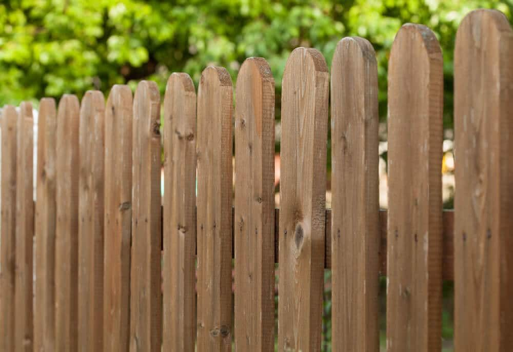

In This Guide
- Cedar has a fine grain and warm reddish-tan color, while treated pine has a plainer look that often takes a tint from its preservatives.
- Both wood types gray in the sun without a finish, but they take stain and paint differently once treated pine has dried.
- The right choice depends on what people see from the street, the finish you want, and how much upkeep you will do.
- Cedar suits natural, visible fences, and treated pine suits painted, solid-stained, and budget-minded ones.
Look at a cedar fence and a treated pine fence side by side on day one and you will see the difference right away. Cedar has a fine, straight grain and a warm tone. Treated pine has a plainer face and often a slight green or tan cast. Looks are only part of the picture, but they are the part you will see every day.
This appearance-first comparison from Big Easy Fence covers how each wood looks new, how it ages in south Louisiana weather, and which finishes and styles suit it best. It also touches on price and durability, so you can pick the right material for your wood fence.
First Impressions: Color and Grain
Color and grain are what visitors notice first, and the two woods start from different places.
Cedar
Cedar runs from pale tan to reddish brown, often with darker streaks. Its grain is fine and fairly straight, and better grades have fewer knots. It also has a mild, pleasant scent that lingers when the wood is cut. Because of the grain, cedar looks best under a clear or lightly tinted finish that lets the wood show through.

Treated Pine
Treated pine is a light yellow to tan wood, often with a green or brown tint from the preservatives. The grain is more varied, with larger knots and swirls. That tint fades over the first months, and some owners like the plain canvas because it accepts solid colors well. If you plan to paint or solid-stain the fence, the wood's own color matters much less.
How Each Wood Ages in Sun and Rain
No wood stays new-looking forever. What matters is how it changes and how much of that change you are willing to live with.
Unfinished cedar turns a soft silver-gray as ultraviolet light breaks down the surface, and many people like that weathered look. Treated pine grays too, but it also tends to check, warp, and cup as it dries and weathers, which can look untidy. In our humid climate, both woods can grow mildew, so a yearly wash keeps either one looking fresh.

For a closer look at the durability side, see our comparison of how long each wood lasts.
Finishes: Stain, Paint, or Bare Wood
The finish you choose does as much for the look as the wood itself, and each wood responds a little differently.
Clear or Semi-Transparent Stain
These finishes protect while letting the grain show. They suit cedar particularly well. On treated pine they also work, once the wood has dried, though the tint of the wood may show through.

Solid Color Stain or Paint
Solid finishes cover the grain and any tint completely. They are a common fit for treated pine, and they let you match the fence to your house trim. The trade-off is that a solid finish can peel, so it needs periodic touch-ups.
Leaving It Bare
A bare fence costs the least to start, and cedar tolerates it better than pine. Either wood will weather, though, and unfinished boards are more prone to cracking and mildew. Sealing adds years and keeps the color you started with.
Styles That Suit Each Wood
Some fence styles show off their wood better than others. These pairings tend to work well.
Horizontal Slat
Long boards run side to side, and clear grain and even color show clearly across the run.
Shadowbox
Alternating boards create depth, and a natural finish highlights the layered look.
Painted Picket
A classic white or colored picket hides the wood tint and pairs well with house trim.
Solid Privacy Panels
A full-height privacy fence with a solid finish looks clean and hides knots and tint.
If you are still working out what looks best with your home, our article on choosing a fence that complements your home's style can help.
The Practical Side: Cost and Care
Looks are the priority here, but the practical side still matters. Cedar usually costs more per board than treated pine. Treated pine takes more finish work, especially after it has dried, while cedar is more forgiving with a lighter routine. Both need cleaning and a fresh finish every few years to keep their looks.
| Look and Feel | Cedar | Treated Pine |
|---|---|---|
| New Color | Pale tan to reddish brown | Light yellow to tan, often with a green tint |
| Grain | Fine and fairly straight | More varied, with larger knots |
| Unfinished Aging | Soft silver-gray | Gray, with more checking and cupping |
| Best Finish | Clear or semi-transparent stain | Solid stain or paint |
| Relative Cost | Higher | Lower |
How to Choose
- Start with what people see. A fence on the street side or around a patio deserves the nicer look. A back-lot fence can go simpler.
- Pick your finish. If you want natural grain, choose cedar. If you plan to paint, treated pine is a sensible choice.
- Match your upkeep habits. Be honest about how often you will wash and recoat the fence.
- Check the budget. Multiply the price gap by the full length of the run, and see whether it fits.
If you would like to see samples or get prices for both woods on your property, our residential fencing team can quote them together with a free estimate.
Not Sure Which Wood Fits Your Yard?
Tell us about your home and the look you want, and we will show you how each wood and finish would work on your fence.